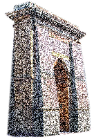

10th Arrondissement
Interactive Map Project
Credits
Book
- Thomas Clerc’s book Paris, musée du XXIe siècle: Le dixième arrondissement was published in 2007 by L’Arbalète Gallimard, which holds the copyright. It is also available through Amazon France.
Text and Translations
- Joshua Armstrong conceived this project and also provided the text and translations. Dr. Armstrong is an assistant professor in the Department of French & Italian at the University of Wisconsin‒Madison.
Site and Map Design
- Dean Olsen designed and built this project in winter 2014 to fulfill requirements for the GIS Certificate Program at the University of Wisconsin‒Madison. This project is based on work done by Dean, Adam Gile, and Sijia (Scarlett) Zhang for Geography 575: “Interactive Cartography & Geovisualization,” a course offered in the Department of Geography. The course was taught by Robert Roth and assisted by Carl Sack, a Ph.D. candidate in the department. Dr. Roth also served as faculty advisor to this project. Design advice and counsel was provided by Tanya Buckingham and the good people of the UW Cartography Lab. Last but most certainly not least, many thanks to Gregg Nestel for his help with the trickier aspects of the coding.
Base Map
- The underlying base maps’ copyright is held by Mapbox and Open Street Maps.
Images
- The images used are details from the cover photo of Clerc’s book and then manipulated in Photoshop. No photographer was credited.
Icons
- The “VCR” icons are made by Freepick.
Languages and Software
- This project was written using the resources of Javascript, JQuery, Leaflet, HTML, and CSS. Among the software packages employed in its creation were Mapbox and Adobe’s Dreamweaver, Fireworks, Illustrator, and Photoshop, all in their CC versions. In addition, Github, Sublime Text 2, Notepad++, and Prepros were invaluable tools.